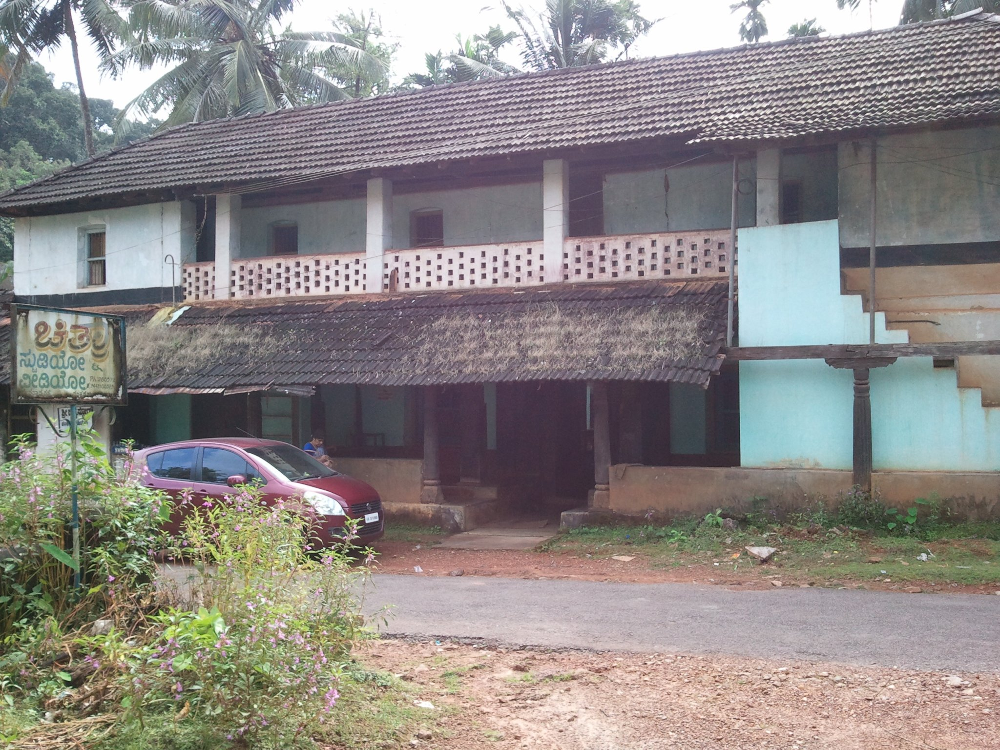

Opening Shankaranarayana…

September 2011 · The front of the house
Created by Abhishek Rao using photographs and memories of Shankaranarayana from 2011–2013.
Explore the house, lake and temple, revisit familiar views, and discover a place remembered by many.
Details follow the photographs; dimensions and unseen spaces are approximate.
Use Photographs to compare views, or Lift roofs to explore the room arrangement.
Move aroundScroll up to move forward, down to move backward. Drag to look around. Use WASD or arrow keys to walk; hold Shift to move faster. On a phone, use the arrow buttons in Walk mode and drag to look.Select Tour to restart the flight. The tour pauses while this information is open.
Source code on GitHub ↗